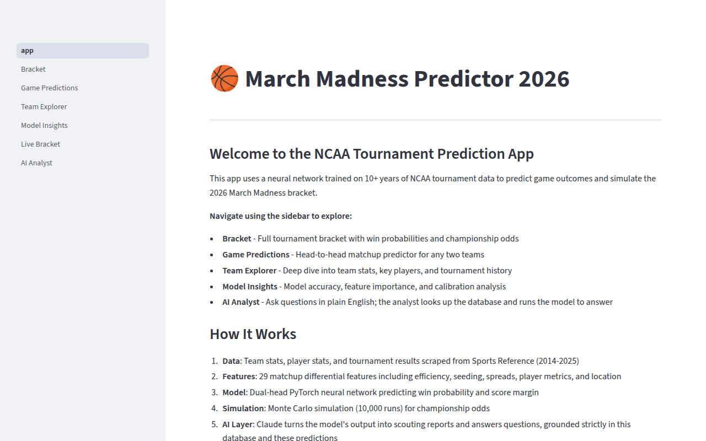

March Madness Predictor
A dual-head PyTorch neural network that predicts NCAA tournament games and simulates full brackets, reaching roughly 87% test accuracy on eleven seasons of Sports Reference data. Runs 10,000-game Monte Carlo simulations for championship odds, tracks live results, factors in scraped injury reports, and adds a Claude-powered analyst grounded entirely in the project's own database. Python, PyTorch, Streamlit.
Code